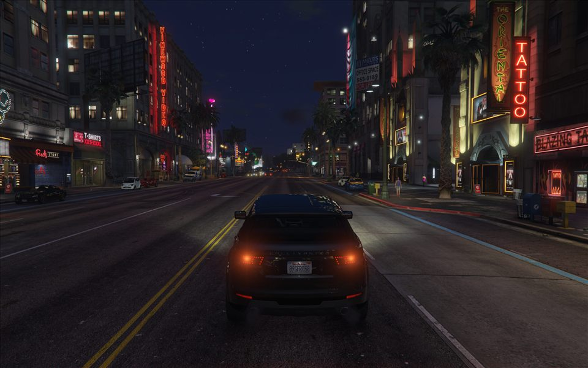
World 15 / Los Santos & Blaine County
GTA 5 & Online
City lights, mountain roads, and the change in pace between Los Santos and Blaine County.
The frames
11 photographs

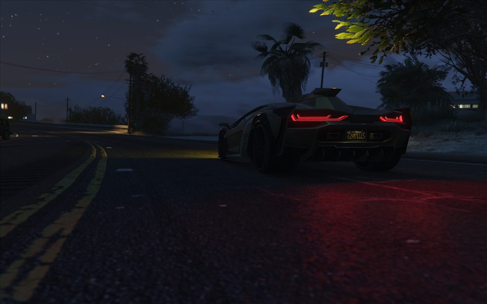
Frame 002Open full size ↗
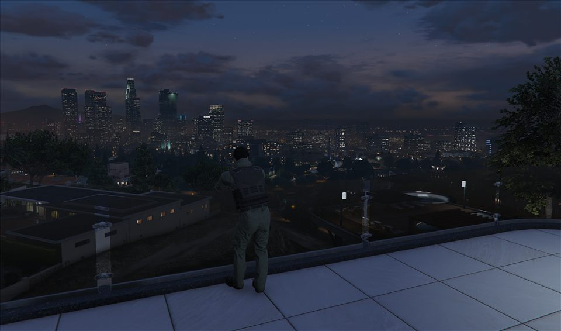
Frame 003Open full size ↗
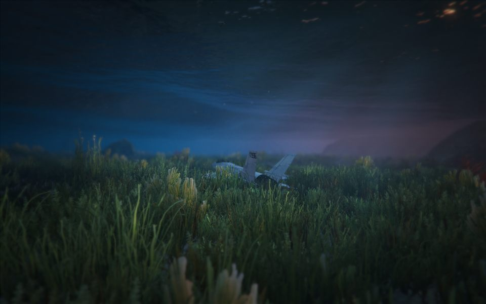
Frame 004Open full size ↗
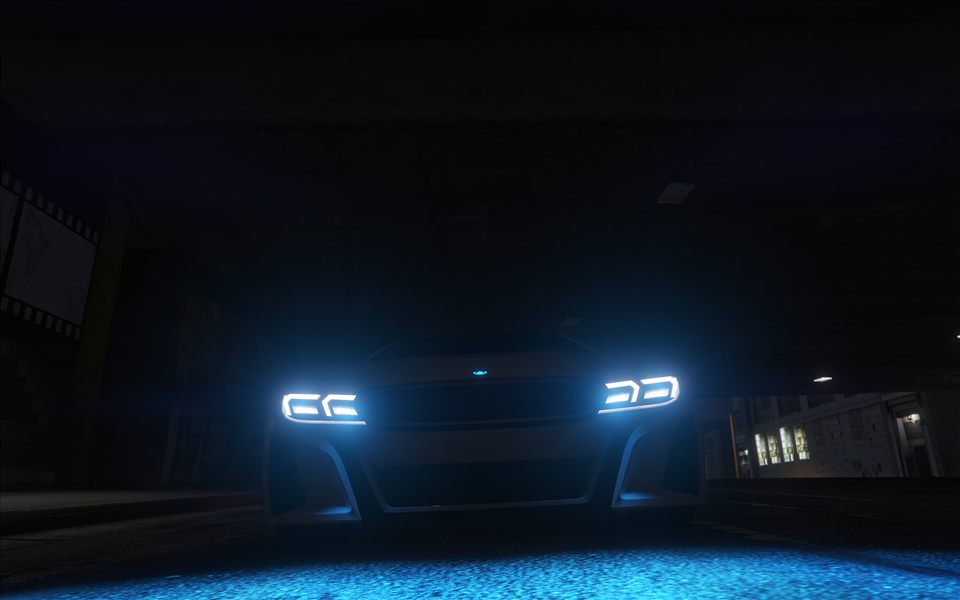
Frame 005Open full size ↗
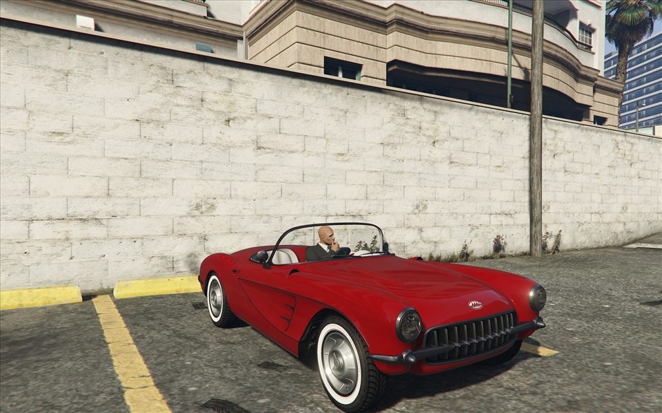
Frame 006Open full size ↗
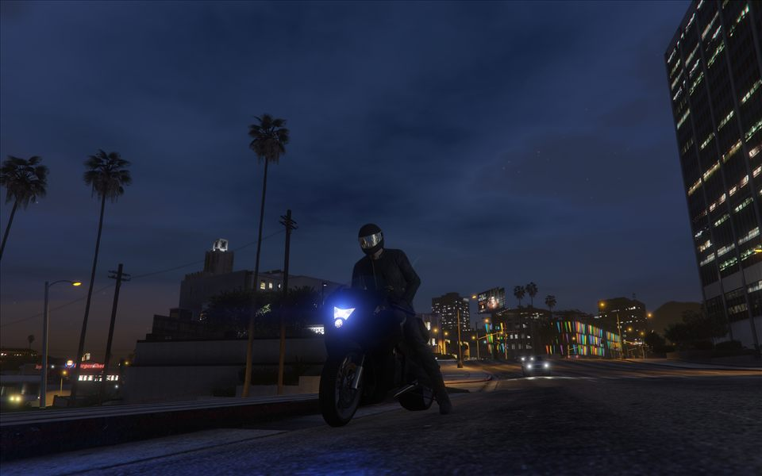
Frame 007Open full size ↗
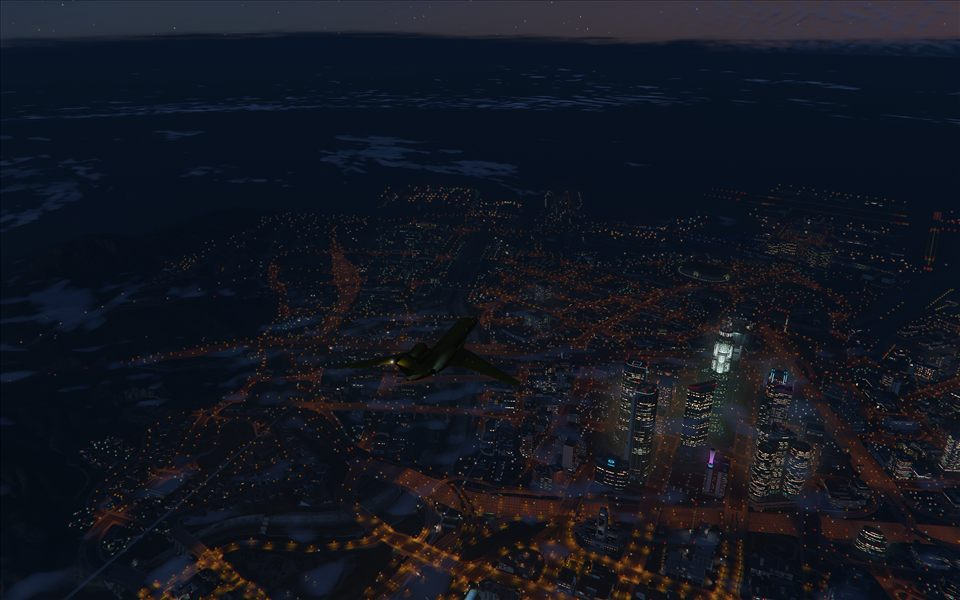
Frame 008Open full size ↗
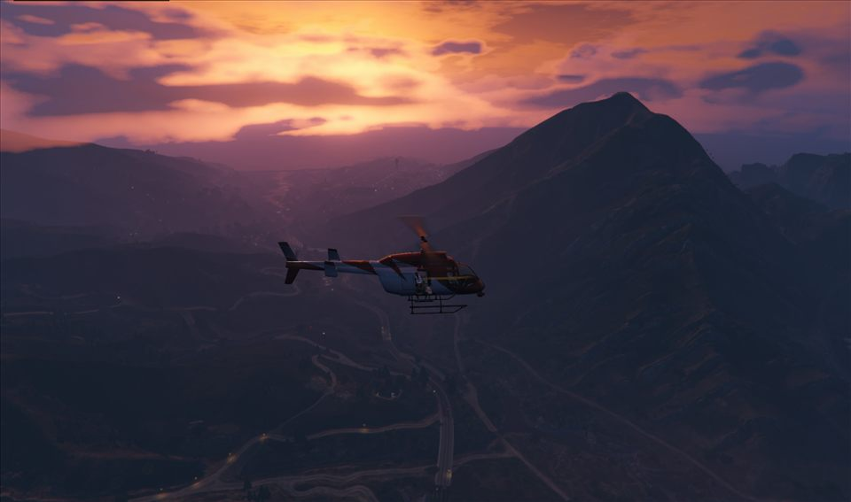
Frame 009Open full size ↗
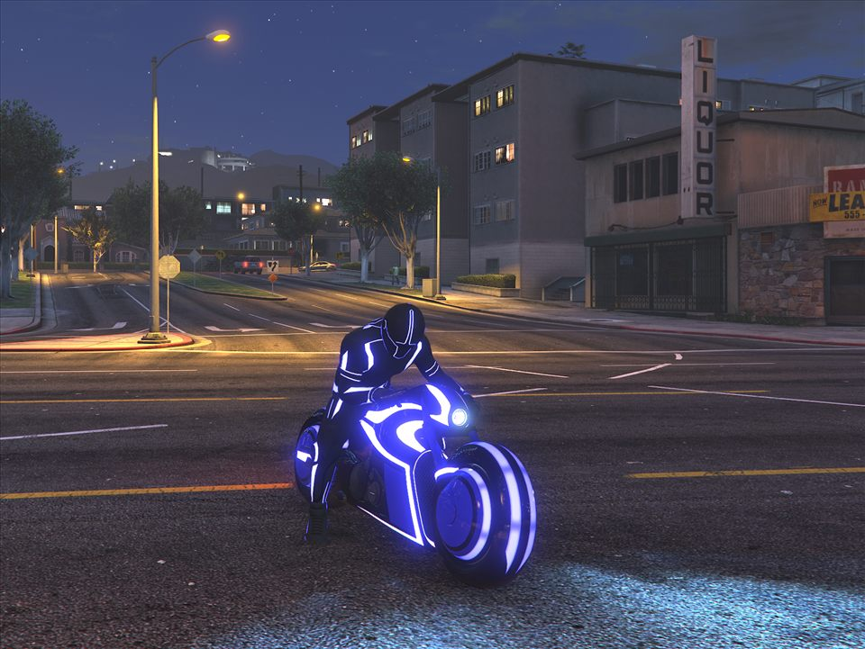
Frame 010Open full size ↗
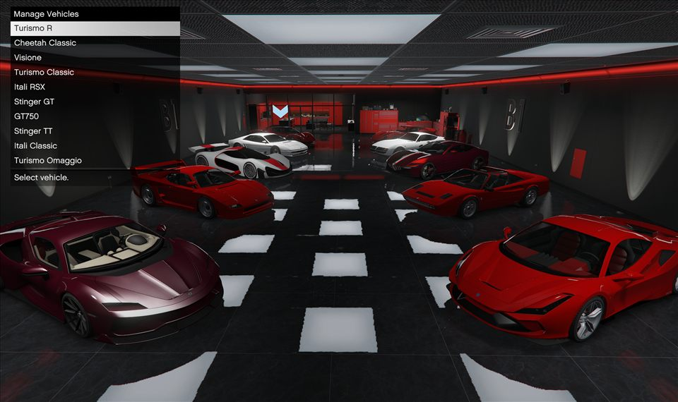
Frame 011Open full size ↗